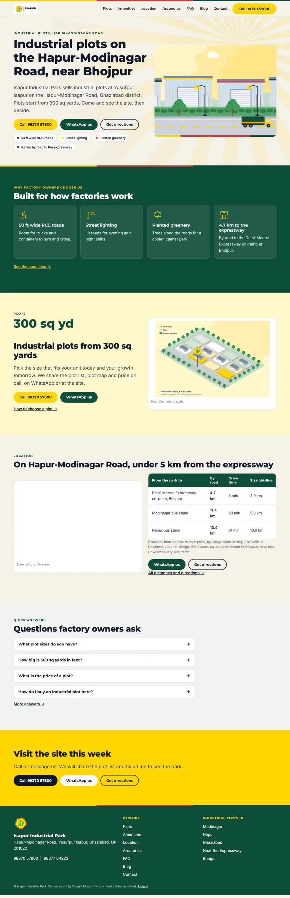
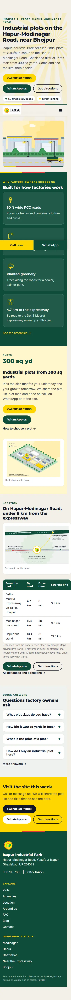
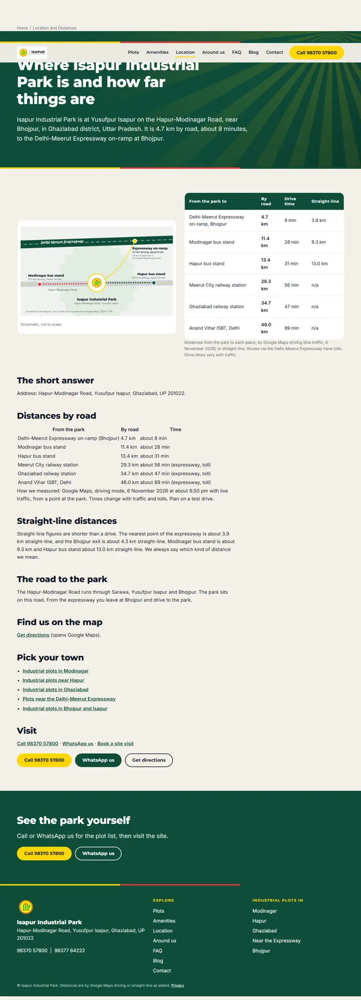
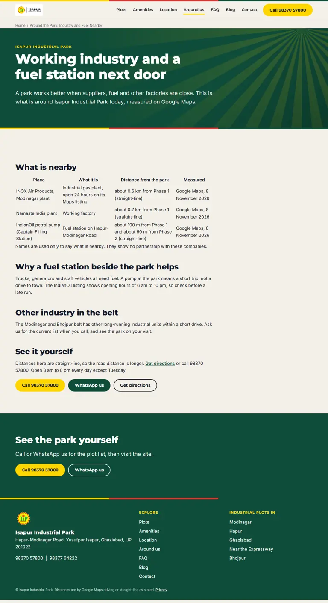

01_Brand
Kit v1.1 and poster are final. Poster lab (fonts, textures, layouts) parked for owner pick.
Next: Promote chosen brand textures only if the owner picks them
Website, SEO, local presence, AEO and GEO, analytics. Updated 2026-11-11. Brand kit and poster are locked. Everything below is research and plan, nothing is built or published on the new site yet.
Kit v1.1 and poster are final. Poster lab (fonts, textures, layouts) parked for owner pick.
Next: Promote chosen brand textures only if the owner picks them
v1 rejected. v2 (site-v2, taste-skill, stand-in photos, real OSM map) home passes the gate, inner pages still being finished. Builder paused by the usage limit. Launcher: Desktop IIP-Site-v2-Launcher.bat.
Next: Resume builder, finish inner pages, deploy to Cloudflare Pages on isapurindustrialpark.com
Competitors, stack, playbook, backlinks, AEO/GEO filed. Real volumes and Maps rank grid pulled via OpenSEO (project Isapur Industrial Park).
Next: Rank tracker on money keywords once the site is live; Hindi check done
Event spec and GTM plan written. Nothing installed yet.
Next: Owner creates GTM, GA4, Search Console
GBP audited, neighbours and petrol pump verified on Maps, 48 listing targets filed. Profile edits wait for owner approval.
Next: Owner moves the Business Profiles to the new Google account, then I read them via OpenSEO
Website copy, 22 FAQ, 2 posts and a sales question list written.
Next: Pillars with ChatGPT, hashtags with Apify
Agent entry points, contract files, this board, weekly SEO watch, tech record, local secrets map.
Next: Review the board with the owner
Only CKS and Shree Haridas (SHD) have real sites. CKS is the one to beat: schema, FAQ, geo pages, llms.txt, 5.0 stars on 40 reviews. SHD has a price-only H1, leftover apartment copy and no schema. Nobody has video, and nobody mentions the petrol pump.
Three separate profiles (Phase 1: 4.5 stars, 11 reviews, 27 photos; Phase 2: 5.0, 3; Phase 3: none) plus 2 unclaimed duplicate pins. No website, description or services on any. Phase 1 ranks 4th for 'industrial park Modinagar' and is absent for 'industrial plots in Modinagar'.
Astro, static pages, Cloudflare Pages (free, commercial use allowed), Markdown content, Keystatic CMS later. GitHub Pages terms bar business hosting, so it stays for our boards only. Budget: LCP 1.8 s, JS under 60 KB, first load under 500 KB.
A search for 'Isapur Industrial Park' returns nothing of ours. Own the place names (Isapur, Bhojpur, Modinagar-Hapur Road) first, then the generic plot keywords where portals dominate.
Google says no special files or schema are needed for AI Overviews. llms.txt shows no citation effect in the studies we found: cheap, but not a tactic. What works: allow AI search bots, Bing Webmaster and IndexNow, answer-first FAQs, consistent name, address and phone, a monthly prompt audit.
INOX Air Products plant about 0.6 km from Phase 1 and Namaste India plant about 0.7 km (straight-line), both verified. IndianOil pump (Captain Filling Station) is about 190 m from Phase 1 and 60 m from Phase 2, open 6 am to 10 pm, not 24 hours. Amul has no plant or depot near us, Patanjali only shops: both stay off the site. The Atom brochure PDF could not be found.
Best pick: isapurindustrialpark.in (also unregistered: .com, protect it with a redirect). Backups isapurindustrial.in and isapurpark.in. All 116 names checked were free. Hostinger India lists .in at about Rs 899 a year. Email: start free with Zoho Mail Forever Free (webmail), fallback Cloudflare Email Routing.
Both 'Building' pins sit at one spot on open farmland about 240 m from the Phase 3 pin, no gate or building visible. They look like junk duplicates. Best handled by a suggest-an-edit report, not a claim.
Not published on a domain yet. Colour comes from the brand kit: green, yellow, bone and sage, charcoal only for text. All artwork is illustration, labelled not to scale.




Both are registered at Porkbun under the business Gmail. Both still use Porkbun nameservers. The .com is the primary until you say otherwise, the .in redirects to it.
Unlocks: Everything below that needs a domain
I created the Cloudflare zone for isapurindustrialpark.com (under the IsapurIndustrialPark account). It stays pending until Porkbun uses Cloudflare's nameservers. After that I add the DNS, Pages, email routing and Search Console records through the Cloudflare MCP.
Unlocks: Deploy, DNS records, Search Console verification, email routing
I added cloudflare-api and astro-docs at user scope for all projects. Cloudflare needs your OAuth click once. After that I can edit DNS, Pages and the Access settings for you.
Unlocks: DNS, Pages deploy, and fixing the OpenSEO Access setting
Your OpenSEO is already hosted at openseo.tanmay-hq.in. The MCP URL answers with a Cloudflare Access login page, so MCP clients cannot connect. I added the MCP globally; it fails until this one setting is on.
Unlocks: OpenSEO tools in Claude: keyword research, ranks, audits
OpenSEO gets all its keyword, rank and backlink data from DataForSEO. You said about 5K a month. Start small and cap it.
Unlocks: Real keyword volumes and rank tracking in OpenSEO
Gives me live search data (volumes, rank, backlinks, audits, AI visibility). Self hosted and MIT licensed.
Unlocks: Real keyword map, weekly rank checks, AI visibility tracking
The business Google account now exists (address kept in the local private map). Remaining: make it Owner of the Business Profiles, GA4, GTM and Search Console, keep your personal account as second Owner.
Unlocks: Clean ownership of every Google asset
Tracking and search data. These are your accounts, so you create them. Google MCPs then let me read reports and edit tags with your approval.
Unlocks: Tracking IDs for the site, indexing, query data, profile edits
GA4 Tag Manager Search Console GA4 MCP Search Console MCP Tag Manager MCP Workspace MCP
Looks professional and receives form and listing mail. Free path first.
Unlocks: Contact email on the site and listings
Bing feeds ChatGPT search, Copilot and others. Import from Search Console and it is nearly automatic.
Unlocks: Bing and AI search visibility
No approval claim goes public without a document. The most common caller question is whether it is approved.
Unlocks: Approvals page and the approved claim on the site and Google profile
Real pictures beat any stock photo. The biggest single upgrade for the site and the Google profile.
Unlocks: Real hero and gallery, Google profile photos
The site cannot state what you have not confirmed. Real questions also decide the FAQ.
Unlocks: Complete FAQ and plots page
The design skill's detector is a downloaded program. I will not run it. You can run it, or we install Rust and I build it from source.
Unlocks: Automatic design detectors
Phase 1, 2, 3 and Phase 1 extension maps become clean SVGs, one unit per plot, saved as a brand asset (01_Brand/Plot-Maps) for future projects like a plot selector. Colours on your maps do not matter, I trace boundaries.
Unlocks: SVG maps with selectable plots, future plot selector
Real photos show the rapid growth at the Phase 1 extension and replace stock photos on the site and the Google profile. You said about a week.
Unlocks: Real photos everywhere, growth story in the data and posts
A walkable 360 tour of the private park, like Google Earth street level, since Google Maps does not cover the park. Needs the camera first.
Unlocks: Street level coverage, a standout section for the site
Once a basic draft is live and SEO work is running, we test pages and keep optimising at a regular rhythm set by visitor numbers and how fast conversions validate.
Unlocks: Steady conversion gains
Exact sign-up pages. Use one identical name, address and phone everywhere. The full list of 48 with link type and notes is in the listing targets note.
Low traffic means big changes first (details and sample sizes in the A/B note).
| OpenSEO (every-app/open-seo) | Install now | One MCP for keywords, rank tracking, competitors, backlinks, audits, AI visibility, local map grid, GSC and GA4. You host it, you set a DataForSEO spend cap. | link |
| Astro Docs MCP | Install now | Official Astro docs search while we build. | link |
| Google Analytics MCP (official) | After launch | Ask Claude about GA4 reports, read only. | link |
| Search Console MCP | After launch | Queries, clicks, indexing, sitemaps. | link |
| Tag Manager MCP | After launch | Edit GTM from chat. You approve every write. | link |
| Cloudflare MCP | After launch | Pages and DNS from chat. Approval needed for DNS. | link |
| Playwright MCP | Later | Test forms and tracking events. Heavy on RAM. | link |
| Skip | Skip | Ahrefs (local repo archived, paid), Semrush (paid), Brave, Perplexity and Exa (duplicates), community Google Business Profile MCPs (tiny, unproven), GitHub MCP (gh CLI works). |
| OpenSEO agent skills | Now | Pre-built SEO workflows on the OpenSEO MCP | link |
| coreyhaines31/marketingskills | Now (pick about 12) | seo-audit, schema, site-architecture, ai-seo, directory-submissions, conversion-tracking, ab-testing, cro, copywriting | link |
| AgriciDaniel/claude-seo (core only) | Now | seo-technical, seo-schema, seo-sitemap, seo-local. Skip its extension installers that use curl | bash | link |
| jdevalk/skills | While building | astro-seo, static-seo, metadata-check | link |
| onvoyage-ai/gtm-engineer-skills | After launch | audit-website-aeo, improve-aeo-geo | link |
Each folder has one owner agent and an AGENT.md entry point. Hand-offs happen only through contract files: keyword map, canonical name-address-phone, event spec, page list. A weekly scheduled task writes new SEO findings to 03_SEO/watch/ and only proposes.
Truth labels in every note: verified (read at the source), reported (third party), guess. Source and competitor facts are as of 2026-11-08.